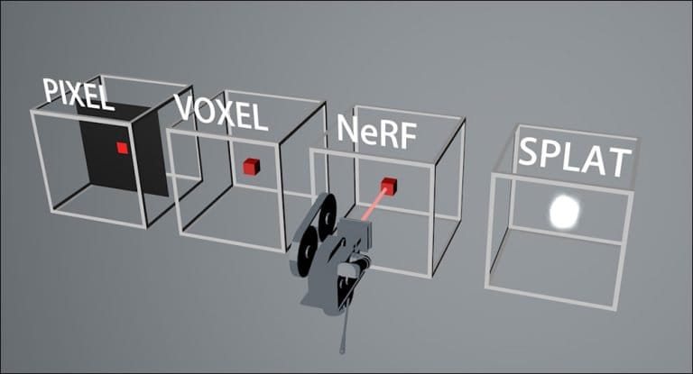

A Comprehensive Exploration of NeRF and Gaussian Splatting
Dive into the depths of NeRF and Gaussian Splatting: two 3D tech titans. Journey through their contrasts to elevate your digital projects!
Choosing the Perfect Technology for Your 3D Projects
Welcome to the cutting-edge intersection of Neural Radiance Fields (NeRF) and Gaussian Splatting—two remarkable technologies at the forefront of 3D scene innovation[1][2]. Thriving in the fast-paced arena of digital reconstruction and photoreal rendering, these robust methodologies are redefining the art of transmuting flat images into breathtaking three-dimensional landscapes. For visionaries such as artists, game designers, or academic trailblazers, mastering these technologies is imperative to propel your three-dimensional ambitions beyond the conventional confines of current practices.
NeRF emerges as a trailblazer, embodying the synthesis of deep learning prowess with 3D scene modeling. It employs advanced neural networks to link 2D photos with volumetric counterparts, creating detailed and realistic environments precisely tailored for exquisite virtual reality escapades, enhanced augmented reality ventures, and high-fidelity computer graphics applications[3].
In contrast, the classical canvas of Gaussian Splatting is celebrated for its volumetric rendering precision and efficacy in point-based visualization. Gaussian Splatting delineates objects using points harmonized with Gaussian influences, armed with a legacy of utility across an array of disciplines—medical imagery, scientific exposition, and graphic computation[1]. Its expertise in casting these points onto bidimensional stages, interlacing their individual impacts, allows it to effortlessly summon lifelike representations amidst the bustling demands of real-time rendering scenarios.
As our exploration unfolds, we will venture further into the unique attributes and practical applications that distinguish NeRF and Gaussian Splatting, we'll navigate through juxtaposition and utilization, pause at implementation vistas, and soar towards performance analysis horizons[2]. Completing this odyssey, you'll be equipped with the clarity and confidence to select the technological companion for your 3D endeavor.
Let's embark on this virtual voyage with imagination and curiosity, amplifying your understanding and sparking the creation of digital worlds.
Contrasting NeRF and Gaussian Splatting Techniques
The realm of 3D rendering and reconstruction is witnessing a renaissance, courtesy of two powerful techniques: Neural Radiance Fields and Gaussian Splatting. They both deliver remarkable results but from disparate technological pathways. As leaders in creating convincing 3D scenes, join us as we delineate these differences and unveil the ingenuity behind their individual capabilities.
NeRF: Deep Learning's Contribution to Stunning Realism
NeRF, the acronym for Neural Radiance Fields, represents a convergence of deep learning innovation with the domain of 3D scene reconstruction. NeRF interprets various 2D images through the rigorous analysis of neural networks, like a virtuoso painter who can evoke the depth of a landscape from mere snapshots. Its prowess lies in its sophisticated use of Gaussian distributions to transform discrete 3D points into accurate 2D representations on a plane, creating views consistent with a quote from a key source: "Image-based rendering allows creating novel views from a scene without knowing anything about the geometry of the scene"[3].
NeRF captures an environment's intricate geometries, textures, and interplays of light, bringing static imagery to life with near-tangible fidelity. It crafts photorealistic vistas that invite viewers to explore from any perspective, paving the way for immersive revolutions across virtual and augmented realities alike.
G-Splat: Mastering the Art of Real-Time Rendering
Gaussian Splatting aligns with the time-honored tradition of point-based rasterization. It leans into the agility of point clouds peppered with Gaussian distributions to define each point's visual impact, unencumbered by the hefty computations of deep learning.
This method's forte is its unrivaled efficiency in real-time rendering, capable of shaping scenes instantaneously in response to a user's interaction. For applications demanding swift, fluid visuals—such as dynamic simulations and interactive exhibits—Gaussian Splatting emerges as the linchpin technology.
Weighing the Merits: NeRF or Gaussian Splatting?
When comparing NeRF and Gaussian Splatting, it is evident that each has signature strengths tailored to specific needs. NeRF's deep learning blueprint excels in reconstructing high-precision scenes, capturing even the most nuanced details to an exemplary standard[4]. Yet, such richness in detail comes at a premium; the computational intensity required for NeRF to function can hamper its utility in scenarios that mandate real-time rendering.
In sharp contrast, Gaussian Splatting wears the crown in scenarios where speed is paramount. Its streamlined approach to handling point clouds and Gaussian calculations makes it adept at delivering high-quality scenes with expediency, catering beautifully to interactive contexts. While Gaussian Splatting is generally efficient and rapid, it might sacrifice a degree of the granular detail and realism that NeRF can provide, particularly in more intricate or texture-rich scenes[5].
Deciding between NeRF and Gaussian Splatting involves a careful assessment of your project's specific demands. If your 3D endeavor values precision and depth, and computational resources are not a constraint, NeRF's performance will likely meet your ambitions. Conversely, if you prioritize expediency and real-time interaction, the swift and capable nature of Gaussian Splatting may serve you best[1:1].
With this understanding of NeRF and Gaussian Splatting's distinctive offerings, the path to picking the suitable tool becomes clearer. Yet the journey doesn't end here. The profound implications of your choice resonate into the operational landscape and demand a further exploration into the application scenarios and bespoke use cases of these technologies, ensuring that your project is not just accomplished, but elevated.
Let's advance into the next chapter of our exploration with a sense of clarity and purpose. We will unravel the application possibilities and wield our newfound knowledge to discern where and how each technique can be harnessed to its fullest potential.
https://www.hammermissions.com/post/comparing-nerf-3d-gaussian-splatting-and-drone-photogrammetry ↩︎
https://blog.datameister.ai/ai-driven-breakthroughs-image-based-rendering ↩︎
https://www.linkedin.com/pulse/exploring-nerf-neural-radiance-fields-its-cmde-brijendra-singh-rawat ↩︎
https://towardsdatascience.com/a-comprehensive-overview-of-gaussian-splatting-e7d570081362 ↩︎
The Top Articles of the Week
100% Humanly Curated Collection of Curious Content
NeRF vs. Gaussian Splatting
Two paradigms stand at the confluence of innovation and practicality in the quest to bring forth stunning 3D visualizations: NeRFs and Gaussian Splatting. Each possesses distinct prowess in their domain, catering to specialized applications that demand an in-depth cognizance of their inherent strengths and capabilities.
NeRF: Mastering the Art of Novel View Synthesis and Scene Reconstruction
NeRF stands out as a deep learning beacon in the expansive seas of 3D reconstruction. This technique has swiftly ascended as a key player, especially prominent in the arena of novel view synthesis[1]. It predicts unseen scenes from snapshots, making it valuable in forging immersive virtual experiences. Picture a virtual tour so vivid that users feel transported, navigating a recreated 3D surroundings seamlessly[2].
NeRF's prowess is not confined to rendering new perspectives. Scene reconstruction represents another significant achievement in NeRF's array of applications. NeRF meticulously stitches together complex three-dimensional scenes from 2D imagery using deep learning, making it invaluable for architectural visualization and other fields where detailed model reconstructions are required[3].
Utilizing NeRF, architects and designers can conjure up intricately detailed models that echo reality, enabling stakeholders to wander through proposed structures before they're built. This unparalleled attention to detail and ability to synthesize novel viewpoints from existing data sets NeRF apart as a transformative technology in scene reconstruction[4].
G-Splat: The Vanguard of Medical Imaging and Scientific Visualization
Gaussian Splatting draws its laurels from a time-honored practicality in real-time visualization, where NeRF weaves dreams of future perspectives. It is particularly popular in medical imaging and scientific visualization for its ability to quickly produce figures capable of conveying the complexity of various structures like organs, vascular channels, or molecular frameworks with startling clarity and speed[5].
In healthcare diagnostics and research, Gaussian Splatting is pioneering a future where doctors and scientists can examine data layers rendered in three dimensions, revolutionizing the interpretation and communication of complex medical conditions. In surgeries and patient education, Gaussian Splatting translates the abstract into anatomical maps that can inform surgical strategies and enrich patient understanding[6][7].
https://www.techtarget.com/searchenterpriseai/definition/neural-radiance-fields-NeRF ↩︎
https://www.linkedin.com/pulse/exploring-nerf-neural-radiance-fields-its-cmde-brijendra-singh-rawat ↩︎
https://towardsdatascience.com/a-comprehensive-overview-of-gaussian-splatting-e7d570081362 ↩︎
https://www.linkedin.com/pulse/recon-labs-internal-open-seminar-3-nerf-gaussian-splatting-ou2he ↩︎
https://www.magnopus.com/blog/the-rise-of-3d-gaussian-splatting ↩︎

Tailoring Technology To Task: Strategic Selection for Maximum Impact
Choosing between the behemoths of NeRF and Gaussian Splatting for your 3D endeavors requires you to consider not only the end goals but also the nuanced demands of your application. NeRF stands as your best option if your venture revolves around the creation of immersive experiences or the precise reconstruction of scenes from a limited set of images. Its capability to synthesize viewpoints and reconstruct detailed 3D environments offers a solid base for virtual and augmented reality applications and sophisticated 3D modeling.
Alternatively, Gaussian Splatting should be your technology of choice for the visualization of volumetric datasets or for situations that call for prompt rendering of highly textured structures. Its proficiency in managing point clouds and its notable application in real-time visualization make it an invaluable asset for scenarios demanding immediate visual feedback[1].
As you thread your choices together, you blend your project's goals, the nature of the data, and the desired outcome, leading to a resolute decision that aligns a technology with your overall vision.
Your choice will intertwine with the specific requirements of your project, including its scale and the immediacy with which the visualizations need to be rendered. This empowers you to select a technology that complements your ambitions, whether it's capturing the minute intricacies of a predefined scene with NeRF or adapting quickly to interactive changes using Gaussian Splatting[2].
We're ready to understand how to apply these technologies effectively, transitioning our digital ideas into reality. The following step will delve into each technology's practical application to enhance our digital projects, considering performance and scalability[3].
The choice between NeRF and Gaussian Splatting is essentially about finding a balance. If complex scene reconstruction is your aim, NeRF will likely be the appropriate choice due to its deep learning approach, albeit with considerable computational demands. For projects where speed and photorealism are critical—for instance, interactive applications—Gaussian Splatting's rapid rendition of large datasets makes it the preferable option[4].
Team expertise is another significant factor—NeRF's implementation relies on a deep understanding of machine learning and neural networks, while Gaussian Splatting can be executed with traditional graphics programming and point cloud management skills[5]. To make the most educated decision, engage with open-source tools, tutorials, and active communities supporting these technologies[6].
Your decision should cater to the project’s unique needs, the resources at your disposal, and the strengths of your team. With a thorough comprehension of both NeRF and Gaussian Splatting, you can select the suitable technology to create the most compelling content for your 3D projects[7].
https://www.hammermissions.com/post/comparing-nerf-3d-gaussian-splatting-and-drone-photogrammetry ↩︎
https://www.linkedin.com/pulse/recon-labs-internal-open-seminar-3-nerf-gaussian-splatting-ou2he ↩︎
https://www.linkedin.com/pulse/exploring-nerf-neural-radiance-fields-its-cmde-brijendra-singh-rawat ↩︎
https://blog.datameister.ai/ai-driven-breakthroughs-image-based-rendering ↩︎
https://www.techtarget.com/searchenterpriseai/definition/neural-radiance-fields-NeRF ↩︎
A Wise Investment of Your Time
List of YouTube videos that captured my undivided attention.
Navigating the Future of 3D Innovation

As we conclude our extensive journey through Neural Radiance Fields (NeRF) and Gaussian Splatting, it's apparent that these technologies are complementary pioneers at the frontier of 3D reconstruction innovation. NeRF excels at rendering intricate details and generating new viewpoints due to its deep learning foundation, while Gaussian Splatting shines in real-time rendering applications, efficiently producing high-quality scenes[1].
This exploration, having delved into each technology's capabilities, application potential, and their transformative impacts, equips us with the perspective needed to make informed decisions in the burgeoning field of 3D visualization and reconstruction.
Consider your trajectory at the nexus of NeRF's depth and Gaussian Splatting's velocity. Evaluate the core essence of your mission. Do you need the vivid realism that NeRF can provide, or the swift interactivity facilitated by Gaussian Splatting? The types of digital landscapes you seek to construct will significantly inform your choice.
As you weigh the practical aspects, such as computational demands against the need for speed, balance this with available resources and the knowledge base of your team. Remember, the successful implementation of these technologies extends beyond theory, requiring hands-on experimentation and adaptation.
Fostering the Future of 3D Ambitions
Your journey should not end with the knowledge imparted through this guide; rather, it should serve as a catalyst for continuous learning and pioneering exploration. Venture into the realms of NeRF and Gaussian Splatting by engaging with communities, discovering case studies, and leveraging online resources and tutorials to bolster your expertise and navigate the complexities of these technologies[2].
In summary, this compendium provides a roadmap that underscores the importance of aligning artistic intent with technical capabilities and the context of your project. It harmonizes your team's strengths with your project's needs and leads you towards making a technology choice that uplifts your 3D work.
As you map out your project's narrative, allow it to be your guiding light. For those instances where meticulous detail is key, NeRF could be your tool of choice. If the need for immediate responsiveness and interaction outweighs other considerations, Gaussian Splatting offers an effective solution.
Keep in mind, in the evolving landscape of 3D innovation, the distinction between NeRF and Gaussian Splatting is not absolute. Each holds its own, yet conjointly, they could be part of a cohesive strategy—two instruments in the orchestra that is your vision. Your expertise in these technologies will open doors to creating immersive 3D experiences that resonate with viewers.
Harmonizing with Vision
In the final analysis, the coalescence of NeRF and Gaussian Splatting embodies the core of technological innovation within the realm of 3D visualization. Whether you delve into the depth and complexity of NeRF or harness the speed and efficiency of Gaussian Splatting, each step you take can significantly enhance your project and advance the field of digital creation.
As this guide comes to a close, let it stand as a beacon, illuminating your path in the creation of compelling 3D environments. May it inspire you to exploit the strengths of NeRF's intricate simulations and Gaussian Splatting's rapid rendering capacities. Through the thoughtful application of these technologies, may your work captivate and immerse audiences in the endless possibilities of virtual worlds[3].
Embrace the potential that NeRF and Gaussian Splatting hold to unlock new realms, to transform unexplored experiences, and to bring forth digital dreams into tangible realities. As you proceed, remember the power of these tools to not just represent space or visual details, but to weave stories, provoke emotions, and shape the future of interaction within digital spaces.
In your pursuit of groundbreaking 3D projects, remain astute and responsive to the ongoing advancements in the field, continually evaluating how evolving technologies can serve your creative and technical needs. Whether modeling the next architectural marvel with NeRF or facilitating real-time surgical visualizations through Gaussian Splatting, your chosen technology becomes an extension of your creative intent—a medium through which your vision is actualized in the digital domain.

Don't forget to check out the weekly roundup: It's Worth A Fortune!